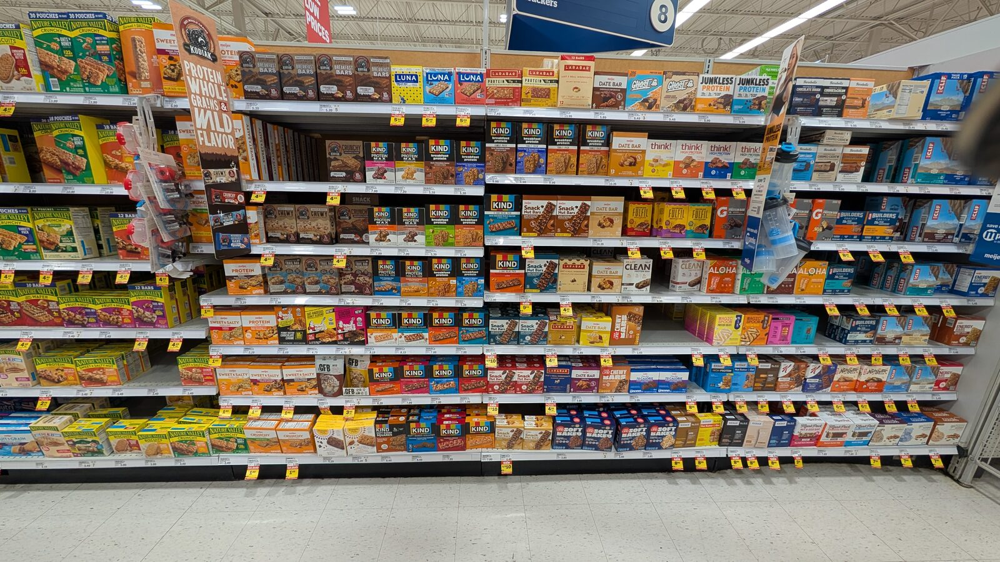
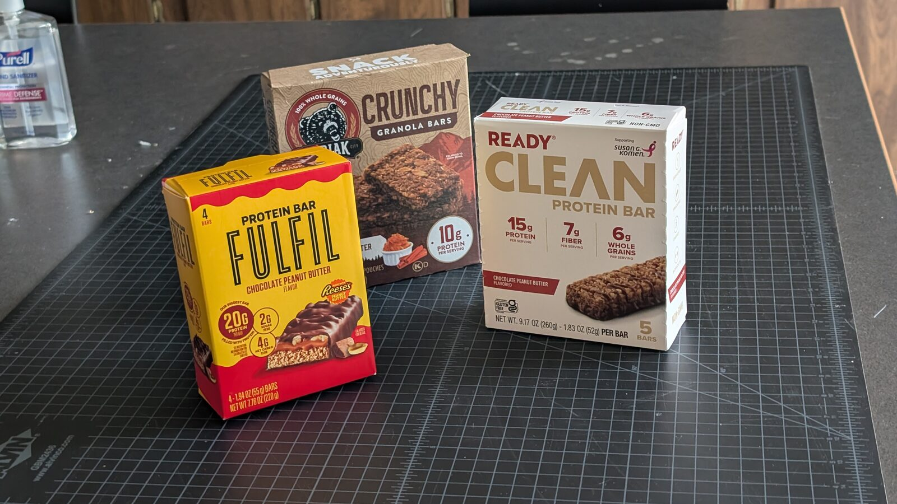

Week 2 Assignment — The shelf study
DSGN 312 · Packaging Design
Assessment status: TODO — see issue #1, decision 2. Previously Formative · satisfactory/unsatisfactory · required as week 5. Competency 1, Competency Rubric.
Ignore what is currently in Canvas. All assignments come to you this way while the course is being rebuilt. Canvas will be revised to match.
The point
In class we stood in front of real packaging and worked out why some boxes got picked up and others didn't. Now you do it, without me.
This is a looking exercise, not a design one. By the end of this course you will design packaging that has to sit on a shelf next to everything else and hold its own. You cannot do that until you can see what everything else is doing.
Every choice on those boxes cost money and was tested. Getting a product onto a shelf is expensive. Assume every single decision was made deliberately, to get someone to put that box in a cart.
1 · Two sections
Once in food, once outside food. Not the protein bar section or the macaroni and cheese section — we did those together.
| Good options | |
|---|---|
| Food | Cereal · frozen foods · snacks · baking · beverages |
| Non-food | Toy section (best) · automotive · cosmetics · medicine |
The toy section is the strongest non-food pick: heavy competition, heavy name recognition, and a lot of packages with cutouts. Start noticing what a cutout reveals and what it hides.
Skip the TV section — nobody buys a television based on the box.
Not sure your two sections work? Post them in Slack for a thumbs up or down.
2 · The whole section, before you touch anything
Take a wide photograph of the entire section.

This is the shot. Stand back far enough that a whole row is in frame.
Then write down which package you noticed first — and seal it. One line. Do not go back and change it.
That sealed line is the point, not a warm-up. Analyse first and you will rationalise a package you can already justify. The useful case is noticing something you would not defend, and that gap is exactly the difference between contrast and taste.
Then record: what caught your eye first, which brands you recognise and where from, how much variety is on the shelf, and what stands out.
You can speak this into your phone rather than writing it in the aisle.
3 · Five products per section
- The first ones you noticed — they pulled you in without effort
- One or two you only spotted after looking a while — ask why they lost the first round
4 · Photograph each one
| Shot | What it shows |
|---|---|
| Wide | The section it lives in |
| Medium | Where it sits — eye level? bottom shelf? what is beside it? |
| All six sides | Pull it out and photograph every face |
Photograph everything, then write it up at home.

Three answers to the same question. This is what your comparison shots should let you do.
5 · Diagram the hierarchy — two packages per section
This is the part everything later in the course depends on. Do not skip it.
Pick two competitors per section — products doing the same job, sitting near each other.
A hierarchy diagram is a claim about reading order, drawn over a photograph. Number what is read first, second, third, and draw a line from each number to the element.
Two distances, because they are different surfaces:
| Distance | What you are testing |
|---|---|
| At two metres | The first read — mass, colour block, silhouette, contrast |
| At arm's length | The second read — type, claims, detail |
Four diagrams per section. Eight in total.
Then, per package:
- Did the reading order change between distances? Which distance was it designed for?
- One contrast sentence explaining the first read, naming what the contrast is against.
The test: would the sentence still be true of this package alone on a white background? If yes, you have described it rather than explained it.
"It stands out because it's bolder" restates the observation.
"It's the only matte surface in a row of gloss, so it holds still while the others glare" explains it.
If you can work with someone: have them number the same package independently, then reproduce their numbering including where you disagreed. Do not quietly resolve it — the disagreement is the finding.
6 · Write what you notice
Per product, then across the group:
- Where the logo sits. Upper-left is where the eye starts
- Contrast — and what it is against
- Type — weight, blockiness, readability at distance, anything rotated
- Is the product visible, or hidden behind scenery?
- Claims — organic, whole grain, clean, no artificial anything
- Claim against delivery — now read the real label
- Material and feel — glossy or uncoated, cheap or premium, recyclable
- Weight against expected weight
- Price, and who it is aimed at
- Name brand vs. store brand — compare ingredients, then compare packaging
- Trust signals — a signature, a mission statement, a founder's name
7 · Compare and contrast
Put them against each other, not five descriptions in a row.
Start noticing the differences, then ask why the difference exists. Who is each one for?
What to hand in
Use the Shelf Study template. For each of your two sections:
- Wide shot of the section
- Your sealed first-noticed line, reproduced as written
- First-impression notes
- Five or more products — wide, medium on the shelf, all six sides
- Four hierarchy diagrams — two packages, each at two metres and arm's length, numbered on the image
- One contrast sentence per diagrammed package, naming the other term
- Written observations per product
- Compare and contrast across the section
You're done when
Your explanation is mechanical — it names what the contrast is against.
Meets
- Eight diagrams, both distances, numbered on the image
- Four contrast sentences, each naming the other term
- The sealed line reproduced honestly, including where it embarrasses you
Not yet
- Taste language — cleaner, nicer, more premium, eye-catching — with no other term named
- Diagrams at one distance only
- A sealed line quietly rewritten to match a later conclusion
Watch out for
Describing instead of explaining. The commonest failure. Contrast is a relationship; name both terms.
Skipping the second look. The loud things jump out first. The interesting observations are in what you notice on the second pass.
Doing the diagrams from memory at home. They are a claim about what happened at the shelf. Photograph first.